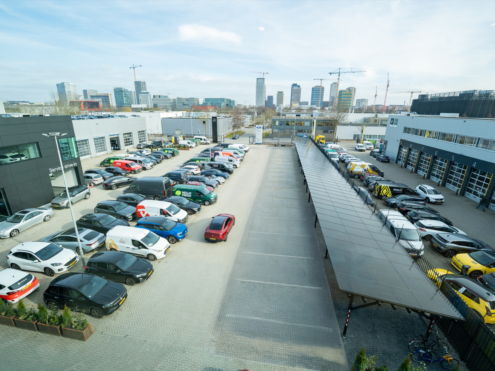

Steeds meer bedrijven willen hun wagenpark elektrificeren en laadpunten bieden aan medewerkers, bezoekers en klanten. Maar de netcapaciteit vormt vaak de grootste beperking. Vibe Energy realiseert complete laadoplossingen waarmee u meer voertuigen laadt — zonder jarenlang te wachten op een zwaardere aansluiting.
Uw wagenpark elektrificeert, medewerkers en bezoekers verwachten dat ze kunnen laden en uw logistiek wordt zero-emissie. Maar de netbeheerder geeft geen extra capaciteit — en verzwaren duurt jaren of kan niet. Zo valt uw elektrificatie stil op de meterkast.
Uw laadbehoefte groeit van alle kanten tegelijk — vaak sneller dan begroot.
De aansluiting is een vast contract. Verzwaren duurt jaren of kan helemaal niet.
Geplande e-trucks en bestelbussen kunnen niet laden — uw transitie loopt vast op vermogen.
Ongestuurd laden stapelt pieken op en jaagt uw energiekosten onnodig omhoog.
Bezoekers en huurders rijden naar locaties die wél laden — gemiste omzet en klantbinding.
Stel u voor: voldoende laadcapaciteit voor uw wagenpark, medewerkers en bezoekers — en ruimte om uit te breiden zonder dat elke stap afhangt van de netbeheerder. Dat levert Vibe Energy: niet alleen laadpalen, maar een complete laadoplossing die meer vermogen levert dan uw aansluiting toelaat. Wij ontwerpen, bouwen én beheren het geheel; u heeft één aanspreekpunt.
— Eén partner. Van ontwerp tot beheer.
Lagere laadkosten overdag. Eigen opwek op het dak voedt het laadveld precies waar geladen wordt.
Piekvermogen precies wanneer u laadt. De batterij levert stroom die de aansluiting alleen niet aankan.
Meer voertuigen tegelijk laden. Slimme software verdeelt het vermogen over de palen op basis van prioriteit.
Altijd het juiste laadtempo. AC en DC laden op de stand — vol vermogen waar nodig, geknepen waar het kan.
Situatie: een transporteur in Zuid-Holland wilde 8 elektrische trekkers inzetten. Probleem: de aansluiting van 1.250 kVA zat vol en de netbeheerder gaf 24 maanden wachttijd — de vloot kon niet rijden. Aanpak: Vibe maakte extra laadcapaciteit vrij op de bestaande aansluiting. Resultaat: binnen 14 weken stond het complete laadplein live en reden de trekkers elektrisch.
Bereken uw laadpleinCijfers indicatief · uitkomst hangt af van locatie, vlootprofiel en groeiplan.
Een quickscan op uw locatie geeft het snelst een concreet antwoord.
Stel uw vraagWij brengen uw huidige aansluiting, laadbehoefte en groeiplannen in kaart. Zo weet u welke oplossing het meeste rendement oplevert.